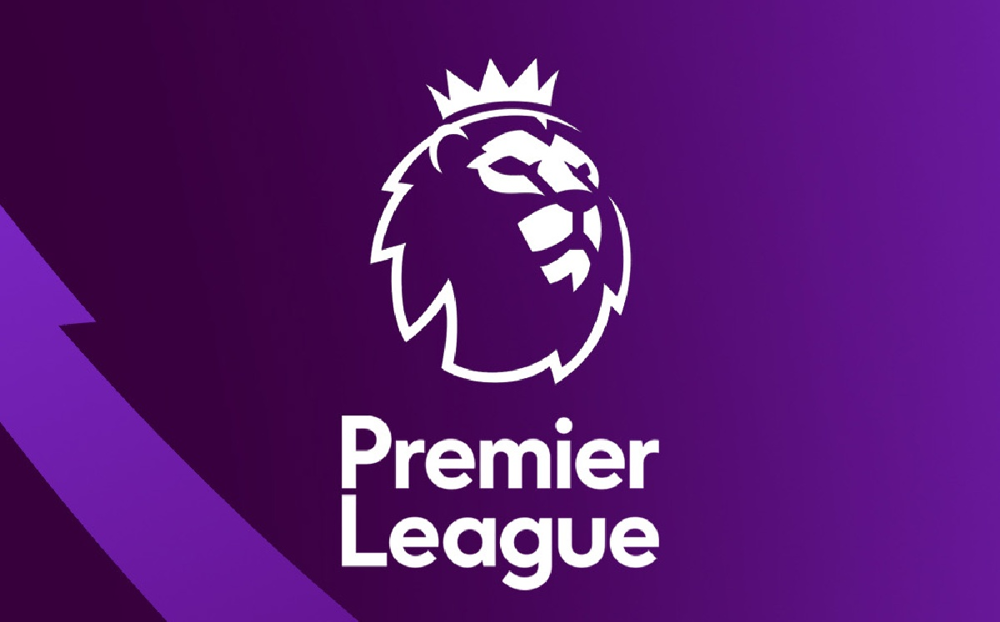

La Premier League(en español: Liga Premier), también conocida en Inglaterra como The Premiership, es la máxima categoría del sistema de ligas de fútbol de Inglaterra. Comenzó a disputarse en la temporada 1992-93. En ella pueden también participar, por motivos históricos, aquellos clubes galeses que lo deseen, siempre que hayan competido ininterrumpidamente en el sistema de fútbol federado inglés desde, al menos, el 30 de junio de 1992. Este es el caso del Swansea City y del Cardiff City, clubes radicados en Gales participantes de la liga y que han llegado a representar a Inglaterra en competiciones europeas.
